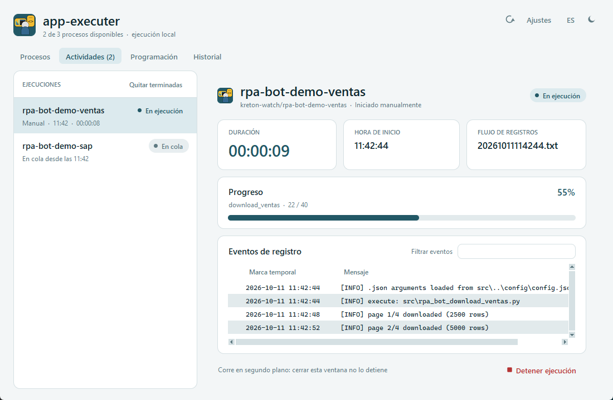

New · Desktop appNuevo · App de escritorio
app-executer
Local orchestrator for RPA/Python bots: launches each bot in its own venv, follows it live (tqdm progress, log events, console), queues runs with a parallelism limit, schedules them with cron expressions through a Windows Task Scheduler driver, keeps a filterable history and uploads logs to MySQL. Bilingual UI with light/dark themes.
Orquestador local de bots RPA/Python: ejecuta cada bot en su propio venv, lo sigue en vivo (progreso tqdm, eventos de log, consola), encola ejecuciones con límite de paralelismo, las programa con expresiones cron mediante un driver del Programador de tareas de Windows, guarda un historial filtrable y sube los logs a MySQL. Interfaz bilingüe con temas claro y oscuro.
- Python standard library only (Tkinter) · 69 unit testsSolo librería estándar de Python (Tkinter) · 69 pruebas unitarias
- Own cron parser, detached runner and diagnostics for misconfigured botsParser cron propio, runner desacoplado y diagnóstico de bots mal configurados
PythonTkinterCronMySQLPowerShellunittest

New · AutomationNuevo · Automatización
job-search-bot
Hourly bot that collects Data Science / Data Engineering job offers from Get on Board (API), Computrabajo and LinkedIn (Selenium), filters them with editable criteria, scores each one 0–100 against my CV skills, stores them in MySQL to avoid duplicates and emails new matches sorted by score.
Bot horario que recoge ofertas de Data Science / Data Engineering de Get on Board (API), Computrabajo y LinkedIn (Selenium), las filtra con criterios editables, les asigna un puntaje de 0 a 100 según las habilidades de mi CV, las guarda en MySQL para no repetirlas y envía por correo las nuevas ordenadas por puntaje.
PythonSeleniumREST APIMySQLOutlook COMPipeline
Data Engineering
Multi-source ETL pipelinesPipelines ETL multifuente
Production ETLs that extract from websites (Selenium), Outlook, MySQL (SQLAlchemy) and local files, transform with pandas and load into MySQL, with stored procedures for database cleansing.
ETLs de producción que extraen de sitios web (Selenium), Outlook, MySQL (SQLAlchemy) y archivos locales, transforman con pandas y cargan en MySQL, con procedimientos almacenados para depurar las bases.
PythonpandasSQLMySQLSelenium
Machine Learning
Machine Learning & Computer VisionMachine Learning y visión por computador
Imbalanced credit-card usage classifier (Random Forest, ROC-AUC 0.74 cross-validated), grocery cost regression validated on unseen periods (R² = 0.84) and hand-gesture recognition with OpenCV + MediaPipe (98.7% accuracy).
Clasificador de uso de tarjeta con clases desbalanceadas (Random Forest, ROC-AUC 0.74 en validación cruzada), regresión de costos de mercado validada en periodos no vistos (R² = 0.84) y reconocimiento de gestos con OpenCV + MediaPipe (accuracy 98.7%).
scikit-learnOpenCVMediaPipepandas
Analytics
Exploratory analysis & statistical validationAnálisis exploratorio y validación estadística
EDA on banking and BPO data with cleaning and statistical validation in pandas and PySpark, delivering model-ready datasets for binary classification.
EDA de datos bancarios y del sector BPO con limpieza y validación estadística en pandas y PySpark, entregando datasets listos para clasificación binaria.
pandasPySparkStatisticsMatplotlib
Automation
Reporting & alert botsBots de reportería y alertas
Bots that build and deliver reports and alerts through Outlook, Telegram and WhatsApp.
Bots que generan y envían reportes y alertas por Outlook, Telegram y WhatsApp.
PythonOutlookTelegramWhatsApp
Big Data
Credential rotation with PySparkRotación de credenciales con PySpark
Generates and rotates credentials with a PySpark UDF, persists them in PostgreSQL and notifies users by email.
Genera y rota credenciales con una UDF de PySpark, las persiste en PostgreSQL y notifica a los usuarios por correo.
PySparkUDFPostgreSQLSMTP
Knowledge baseDocumentación
kreton-learning-es
Technical documentation in Spanish on PySpark, Apache NiFi, AWS, scikit-learn and engineering best practices.
Documentación técnica en español sobre PySpark, Apache NiFi, AWS, scikit-learn y buenas prácticas de ingeniería.
PySparkNiFiAWSscikit-learn